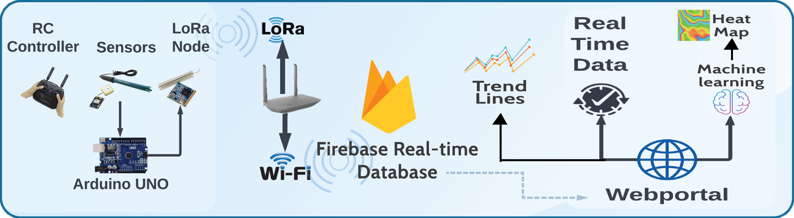

Research
Medical Image Analysis
Deep Learning for Diagnosis of Pancreatic Diseases
This project involves utilizing deep learning methodologies to analyze medical imaging and multimodal clinical data for predicting disease trajectories in patients with pancreatic diseases. By applying deep learning algorithms, the project aims to enhance the accuracy of diagnostic and prognostic models, contributing to improved patient outcomes and personalized management.
Machine Learning for Environmental Monitoring
Water Quality Monitoring
Designed a small unmanned surface vehicle (USV) capable of measuring physicochemical parameters of water along with GPS coordinates to monitor water quality in real-time. The data collected by the USV is classified into five categories using a neural network, using oversampling techniques to augment the training data. The data is wirelessly transmitted to a web portal, where it is visualized through trendlines, data tables, and a color-coded heatmap. The system enables effective real-time monitoring of water quality in small to medium-sized water bodies, helping to protect water sources and human health. Links: Paper | Blog
